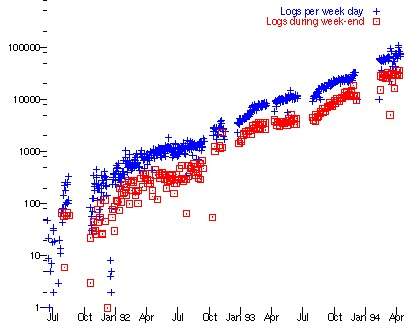

Vannevar Bush writes an article in Atlantic Monthly about a photo-electrical-mechanical device called a Memex, for memory extension, which could make and follow links between documents on microfiche
1960s
Doug Engelbart prototypes an "oNLine System" (NLS) which does hypertext browsing editing, email, and so on. He invents the mouse for this purpose. See the Bootstrap Institute library.
Ted Nelson coins the word Hypertext in A File Structure for the Complex, the Changing, and the Indeterminate. 20th National Conference, New York, Association for Computing Machinery, 1965. See also: Literary Machines. Note: There used to be a link here to "Hypertext and Hypermedia: A Selected Bibliography" by Terence Harpold, but the site hosting the resource did not maintain the link.
1980
While consulting for CERN June-December of 1980, Tim Berners-Lee writes a notebook program, "Enquire-Within-Upon-Everything", which allows links to be made between arbitrary nodes. Each node had a title, a type, and a list of bidirectional typed links. "ENQUIRE" ran on Norsk Data machines under SINTRAN-III. See: Enquire user manual as scanned images or as HTML page(alt).
1989
march
"Information Management: A Proposal" written by Tim BL and circulated for comments at CERN (TBL). Paper "HyperText and CERN" produced as background (text or WriteNow format).
1990
may
Same proposal recirculated
September
Mike Sendall, Tim's boss, Oks the purchase of a NeXT cube, and allows Tim to go ahead and write a global hypertext system
October
Tim starts work on a hypertext GUI browser+editor using the NeXTStep development environment. He makes up "WorldWideWeb" as a name for the program. (See the first browser screenshot) "World Wide Web" as a name for the project (over Information Mesh, Mine of Information, and Information Mine).
Project original proposal reformulated with encouragement from CN and ECP divisional management. Robert Cailliau (ECP) joins and is co-author of new version
November
Initial WorldWideWeb program development continues on the NeXT (TBL) . This was a "what you see is what you get" (wysiwyg) browser/editor with direct inline creation of links. The first web server was nxoc01.cern.ch, later called info.cern.ch, and the first web page http://nxoc01.cern.ch/hypertext/WWW/TheProject.html Unfortunately CERN no longer supports the historical site. Note from this era too, the least recently modified web page we know of, last changed Tue, 13 Nov 1990 15:17:00 GMT (though the URI changed.)
November
Technical Student Nicola Pellow (CN) joins and starts work on the line-mode browser. Bernd Pollermann (CN) helps get interface to CERNVM "FIND" index running. TBL gives a colloquium on hypertext in general.
christmas
Line mode browser and WorldWideWeb browser/editor demonstrable. Acces is possible to hypertext files, CERNVM "FIND", and Internet news articles.
Line mode browser (www) released to limited audience on "priam" vax, rs6000, sun4.
May
Workplan produced for CN/AS group
17 May
Presentation to "C5" Committee. General release of WWW on central CERN machines.
12 June
CERN Computer Seminar on WWW.
August
Files available on the net by FTP, posted on alt.hypertext (6th, 6th, 19th Aug), comp.sys.next.announce (20th), comp.text.sgml and comp.mail.multi-media (22nd). Jean-Francois Groff joins the project.
October
VMS/HELP and WAIS gateways installed. Mailing lists www-interest (now www-announce) and www-talk@info.cern.ch (see archive) started. One year status report. Anonymous telnet service started.
December
Presented poster and demonstration at Hypertext'91 in San Antonio, Texas (US). W3 browser installed on VM/CMS. CERN computer newsletter announces W3 to the HEP world.
Dec 12: Paul Kunz installs first Web server outside of Europe, at SLAC.
1992
15 Jannuary
Line mode browser release 1.1 available by anonymous FTP (see news). Presentation to AIHEP'92 at La Londe (FR).
12 Feburary
Line mode v 1.2 annouced on alt.hypertext, comp.infosystems, comp.mail.multi-media, cern.sting, comp.archives.admin, and mailing lists.
April
29th April: Release of Finnish "Erwise" GUI client for X mentioned in review by TimBL
May
Pei Wei's "Viola" GUI browser for X test version dated May 15. (See review by TimBL)
At CERN, Presentation and demo at JENC3, Innsbruck (AT). Technical Student Carl Barker (ECP) joins the project
June
Presentation and demo at HEPVM (Lyon). People at FNAL (Fermi National Accelerator Laboratory (US)), NIKHEF (Nationaal Instituut voor Kern- en Hoge Energie Fysika, (NL)), DESY (Deutsches Elektronen Synchrotron, Hamburg, (DE)) join with WWW servers.
July
Distribution of WWW through CernLib, including Viola. WWW library code ported to DECnet. Report to the Advisory Board on Computing.
August
Introduction of CVS for code management at CERN.
September
Plenary session demonstration to the HEP community at CHEP'92 in Annecy (FR).
November
Jump back in time to a snapshot of the WWW Project Page as of 3 Nov 1992 and the WWW project web of the time, including the list of all 26 resoanably reliable servers, NCSA's having just been added, but no sign of Mosaic.
1993
15 Jannuary
Line mode browser release 1.1 available by anonymous FTP (see news). Presentation to AIHEP'92 at La Londe (FR).
12 Feburary
Line mode v 1.2 annouced on alt.hypertext, comp.infosystems, comp.mail.multi-media, cern.sting, comp.archives.admin, and mailing lists.
April
29th April: Release of Finnish "Erwise" GUI client for X mentioned in review by TimBL
May
Pei Wei's "Viola" GUI browser for X test version dated May 15. (See review by TimBL)
At CERN, Presentation and demo at JENC3, Innsbruck (AT). Technical Student Carl Barker (ECP) joins the project
June
Presentation and demo at HEPVM (Lyon). People at FNAL (Fermi National Accelerator Laboratory (US)), NIKHEF (Nationaal Instituut voor Kern- en Hoge Energie Fysika, (NL)), DESY (Deutsches Elektronen Synchrotron, Hamburg, (DE)) join with WWW servers.
July
Distribution of WWW through CernLib, including Viola. WWW library code ported to DECnet. Report to the Advisory Board on Computing.
August
Introduction of CVS for code management at CERN.
September
Plenary session demonstration to the HEP community at CHEP'92 in Annecy (FR).
November
Jump back in time to a snapshot of the WWW Project Page as of 3 Nov 1992 and the WWW project web of the time, including the list of all 26 resoanably reliable servers, NCSA's having just been added, but no sign of Mosaic.
1994
Jannuary
O'Reilly, Spry, etc announce "Internet in a box" product to bring the Web into homes.
March
Marc Andreessen and colleagues leave NCSA to form "Mosaic Communications Corp" (later Netscape).
May
First International WWW Conference, CERN, Geneva. Heavily oversubscribed (800 apply, 400 allowed in): the "Woodstock of the Web". VRML is conceived here. TBL's closing keynote hints at upcoming organization. (Some of Tim's slides on Semantic Web)
June
M. Bangemann report on European Commission Information Superhighway plan. Over 1500 registered servers.
Load on the first Web server (info.cern.ch) 1000 times what it has been 3 years earlier.

July
MIT/CERN agreement to start W3 Organisation is announced by Bangemann
in Boston. MIT press
release. Reports in Wall Street Journal, Boston Globe etc.
August
Founding of the IW3C2: the
International WWW Conference Committee, in Boston, by NCSA and CERN.
September
The European Commission and CERN propose the WebCore project for
development of the Web core technology in Europe.
1 October
World Wide Web Consortium founded.
October
Second International WWW Conference:
"Mosaic and the Web", Chicago. Also heavily oversubscribed: 2000 apply,
1300 allowed in.
14 December
First W3ConsortiumMeeting at M.I.T. in Cambridge (USA).
15 December
First meeting with European Industry and the European Consortium
branch, at the European
Commission, Brussels.
16 December
CERN Council approves unanimously the construction of the LHC
(Large Hadron Collider) accelerator, CERN's next machine and competitor
to the US' already defunct SSC (Superconducting Supercollider).
Stringent budget conditions are however imposed. CERN thus decides not
to continue WWW development, and in concertation with the European
Commission and INRIA (the Institut
National pour la Recherche en Informatique et Automatique, FR) transfers
the WebCore project to INRIA.
1995
February
the Web is the main reason for the theme of the G7 meeting hosted by
the European Commission in the European Parliament buildings in Brussels
(BE).
March
CERN holds a two-day seminar
for the European Media (press, radio, TV), attended by 250 reporters, to
show WWW. It is demonstrated on 60 machines, with 30 pupils from the
local International High School helping the reporters "surf the Web".
Founding of the Web Society in
Graz (AT), by the Technical University of Graz (home of Hyper-G), CERN,
the University of Minnesota (home of Gopher) and INRIA.